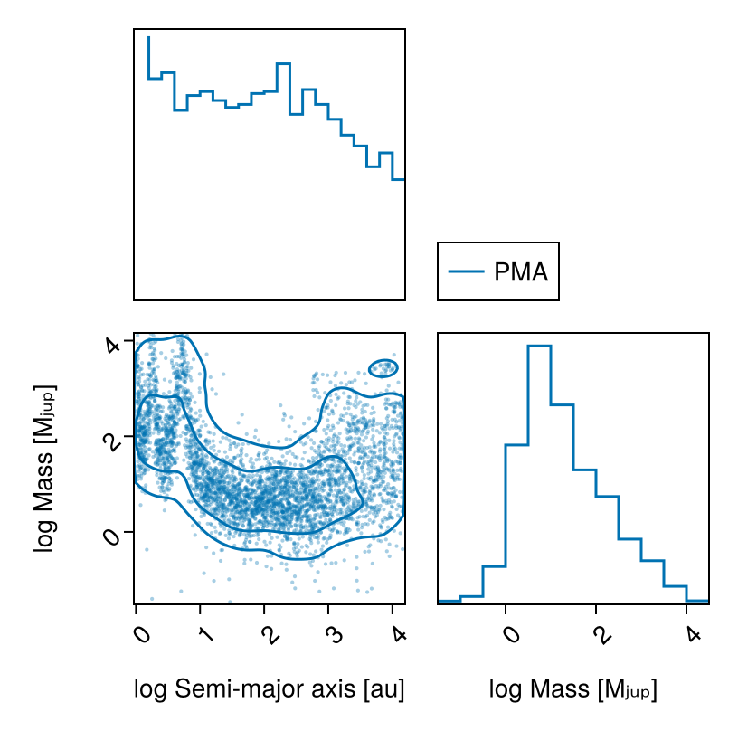
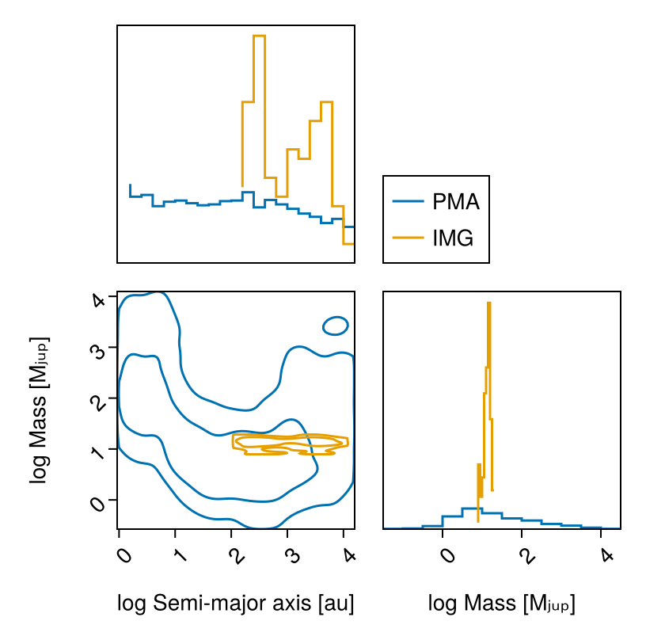
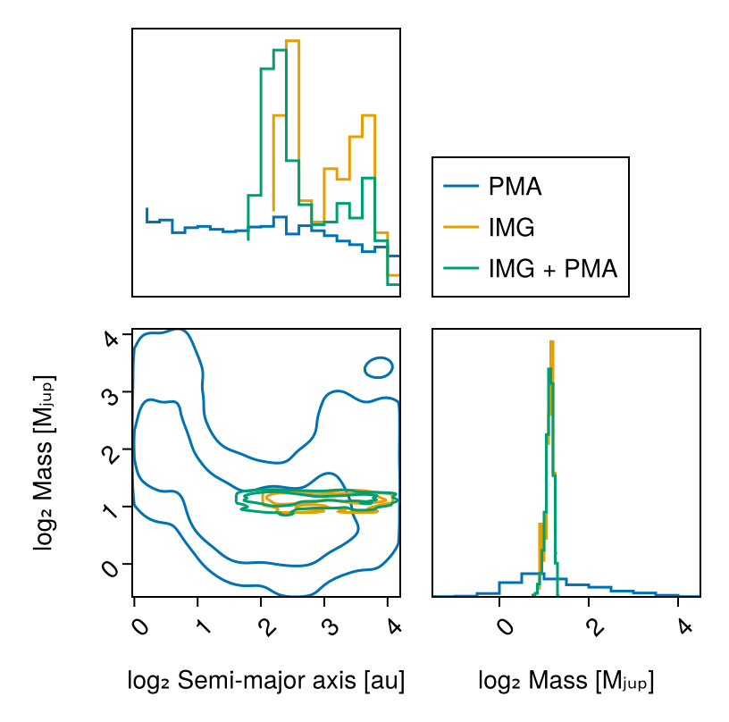

Detection Limits
This tutorial is a work in progress.
This guide shows how to calculate detection limits, in mass, or in photometry, as a function of orbital parameters for different combinations of data.
There are a few use cases for this:
- Mass limit vs semi-major axis given one or more images and/or contrast curves
- Mass limit vs semi-major axis given an RV non-detection
- Mass limit vs semi-major axis given proper motion anomaly from the GAIA-Hipparcos Catalog of Accelerations
- Any combination of the above
We will once more use some sample data from the system HD 91312 A & B discovered by SCExAO.
using Octofitter
using OctofitterImages
using OctofitterRadialVelocity
using Distributions
using Pigeons
using CairoMakie
using PairPlotsPhotometry Model
We will need to decide on an atmosphere model to map image intensities into mass. Here we use the Sonora Bobcat cooling and atmosphere models which will be auto-downloaded by Octofitter:
const cooling_tracks = Octofitter.sonora_cooling_interpolator()
const sonora_temp_mass_L = Octofitter.sonora_photometry_interpolator(:Keck_L′)(::Octofitter.var"#model_interpolator#228"{Interpolations.FilledExtrapolation{Float64, 2, Interpolations.ScaledInterpolation{Float64, 2, Interpolations.BSplineInterpolation{Float64, 2, Matrix{Float64}, Interpolations.BSpline{Interpolations.Linear{Interpolations.Throw{Interpolations.OnGrid}}}, Tuple{Base.OneTo{Int64}, Base.OneTo{Int64}}}, Interpolations.BSpline{Interpolations.Linear{Interpolations.Throw{Interpolations.OnGrid}}}, Tuple{StepRangeLen{Float64, Base.TwicePrecision{Float64}, Base.TwicePrecision{Float64}, Int64}, StepRangeLen{Float64, Base.TwicePrecision{Float64}, Base.TwicePrecision{Float64}, Int64}}}, Interpolations.BSpline{Interpolations.Linear{Interpolations.Throw{Interpolations.OnGrid}}}, Float64}, Float64, Float64, Float64, Float64}) (generic function with 1 method)Proper Motion Anomaly Data
We start by defining and sampling from a model that only includes proper motion anomaly data from the HGCA:
@planet B Visual{KepOrbit} begin
a ~ LogUniform(1, 65)
e ~ Uniform(0,0.9)
ω ~ Uniform(0,2pi)
i ~ Sine() # The Sine() distribution is defined by Octofitter
Ω ~ Uniform(0,pi)# ~ UniformCircular()
mass = system.M_sec
θ ~ Uniform(0,2pi)
tp = θ_at_epoch_to_tperi(system,B,57423.0) # epoch of GAIA measurement
end
@system HD91312_pma begin
M_pri ~ truncated(Normal(0.95, 0.05), lower=0) # Msol
M_sec ~ LogUniform(0.2, 65) # MJup
M = system.M_pri + system.M_sec*Octofitter.mjup2msol # Msol
plx ~ gaia_plx(gaia_id=6166183842771027328)
# Priors on the center of mass proper motion
pmra ~ Normal(0, 1000)
pmdec ~ Normal(0, 1000)
end HGCALikelihood(gaia_id=6166183842771027328) B
model_pma = Octofitter.LogDensityModel(HD91312_pma)LogDensityModel for System HD91312_pma of dimension 11 and 100 epochs with fields .ℓπcallback and .∇ℓπcallback
Sample:
using Pigeons
chain_pma, pt = octofit_pigeons(model_pma, n_chains=16, n_chains_variational=16, n_rounds=12);[ Info: Sampler running with multiple threads : true
[ Info: Likelihood evaluated with multiple threads: false
[ Info: Determining initial positions and metric using pathfinder
┌ Info: Found a sample of initial positions
└ initial_logpost_range = (-20.49211742138131, -7.610986970116208)
────────────────────────────────────────────────────────────────────────────────────────────────────────────────────────
scans restarts Λ Λ_var time(s) allc(B) log(Z₁/Z₀) min(α) mean(α) min(αₑ) mean(αₑ)
────────── ────────── ────────── ────────── ────────── ────────── ────────── ────────── ────────── ────────── ──────────
2 0 2.23 3.56 6.89 3.03e+08 -2.96e+08 0 0.813 0.924 0.96
4 0 6.32 4.67 3.84 9.28e+06 -2.39e+05 0 0.646 0.888 0.918
8 0 6.09 6.5 6.27 8.92e+05 -6.49e+04 0 0.594 0.887 0.916
16 0 7.21 5.33 12.7 1.71e+06 -3.24e+04 0 0.595 0.891 0.911
32 0 7.85 7.36 25.6 3.19e+06 -2.41e+03 0 0.51 0.89 0.906
64 3 8.45 2.61 53.5 2.29e+08 -14.7 2.21e-29 0.643 0.892 0.904
128 10 8.23 2.67 105 4.04e+08 -15.1 1.22e-05 0.649 0.898 0.905
256 29 8.94 2.47 207 7.89e+08 -15.2 0.000161 0.632 0.899 0.907
512 54 9.56 2.68 421 1.6e+09 -15.1 0.015 0.605 0.9 0.907
1.02e+03 140 9.6 2.54 842 3.18e+09 -15.1 0.0432 0.609 0.9 0.908
2.05e+03 272 9.77 2.59 1.69e+03 6.42e+09 -15.5 0.134 0.601 0.902 0.907
4.1e+03 524 9.86 2.75 3.36e+03 1.28e+10 -15.1 0.226 0.593 0.901 0.908
────────────────────────────────────────────────────────────────────────────────────────────────────────────────────────Plot the marginal mass vs. semi-major axis posterior with contours using PairPlots.jl:
pairplot(
PairPlots.Series(
(;
sma=log.(chain_pma[:B_a][:],),
mass=log.(chain_pma[:B_mass][:]),
),
label="PMA",
color=Makie.wong_colors()[1],
)=>(
PairPlots.Scatter(markersize=3,alpha=0.35),
PairPlots.Contour(sigmas=[1,3]),
PairPlots.MarginStepHist(),
),
labels=Dict(
:sma=>"log Semi-major axis [au]",
:mass=>"log Mass [Mⱼᵤₚ]"
)
)
Image Data
using AstroImages
download(
"https://github.com/sefffal/Octofitter.jl/raw/main/docs/image-examples-1.fits",
"image-examples-1.fits"
)
# Or multi-extension FITS (this example)
image = AstroImages.load("image-examples-1.fits").*2e-7 # units of contrast
image_data = ImageLikelihood(
(band=:L, image=AstroImages.recenter(image), platescale=4.0, epoch=57423.6),
)OctofitterImages.ImageLikelihood Table with 6 columns and 1 row:
band image platescale epoch contrast ⋯
┌─────────────────────────────────────────────────────────────────────────
1 │ L [-6.80461e-8 -6.247… 4.0 57423.6 65-element extrapol… ⋯@planet B Visual{KepOrbit} begin
a ~ LogUniform(1, 65)
e ~ Uniform(0,0.9)
ω ~ Uniform(0,2pi)
i ~ Sine() # The Sine() distribution is defined by Octofitter
Ω ~ Uniform(0,pi)
mass = system.M_sec
# Calculate planet temperature from cooling track and planet mass variable
tempK = cooling_tracks(system.age, B.mass)
# Calculate absolute magnitude
abs_mag_L = sonora_temp_mass_L(B.tempK, B.mass)
# Deal with out-of-grid values by clamping to grid max and min
abs_mal_L′ = if isfinite(B.abs_mag_L)
B.abs_mag_L
elseif B.mass > 10
8.2 # jump to absurdly bright
else
16.7 # jump to absurdly dim
end
# Calculate relative magnitude
rel_mag_L = B.abs_mal_L′ - system.rel_mag + 5log10(1000/system.plx)
# Convert to contrast (same units as image)
L = 10.0^(B.rel_mag_L/-2.5)
θ ~ Uniform(0,2pi)
tp = θ_at_epoch_to_tperi(system,B,57423.6)
end image_data
@system HD91312_img begin
# age ~ truncated(Normal(40, 15),lower=0, upper=200)
age = 10
M_pri ~ truncated(Normal(0.95, 0.05), lower=0) # Msol
# Mass of secondary
# Make sure to pick only a mass range that is covered by your models
M_sec ~ LogUniform(0.55, 65) # MJup
M = system.M_pri + system.M_sec*Octofitter.mjup2msol # Msol
plx ~ gaia_plx(gaia_id=6166183842771027328)
# Priors on the center of mass proper motion
# pmra ~ Normal(0, 1000)
# pmdec ~ Normal(0, 1000)
rel_mag = 5.65
end B
model_img = Octofitter.LogDensityModel(HD91312_img)LogDensityModel for System HD91312_img of dimension 9 and 1 epochs with fields .ℓπcallback and .∇ℓπcallback
using Pigeons
chain_img, pt = octofit_pigeons(model_img, n_chains=5, n_chains_variational=5, n_rounds=7)(chain = MCMC chain (128×23×1 Array{Float64, 3}), pt = PT(checkpoint = false, ...))Plot mass vs. semi-major axis posterior:
vis_layers = (
PairPlots.Contour(sigmas=[1,3]),
PairPlots.MarginStepHist(),
)
pairplot(
PairPlots.Series(
(;
sma=log.(chain_pma[:B_a][:],),
mass=log.(chain_pma[:B_mass][:]),
),
label="PMA",
color=Makie.wong_colors()[1],
)=>vis_layers,
PairPlots.Series(
(;
sma=log.(chain_img[:B_a][:],),
mass=log.(chain_img[:B_mass][:]),
),
label="IMG",
color=Makie.wong_colors()[2],
)=>vis_layers,
labels=Dict(
:sma=>"log Semi-major axis [au]",
:mass=>"log Mass [Mⱼᵤₚ]"
)
)
Image and PMA data
@planet B Visual{KepOrbit} begin
a ~ LogUniform(1, 65)
e ~ Uniform(0,0.9)
ω ~ Uniform(0,2pi)
i ~ Sine() # The Sine() distribution is defined by Octofitter
Ω ~ Uniform(0,pi)
mass = system.M_sec
# Calculate planet temperature from cooling track and planet mass variable
tempK = cooling_tracks(system.age, B.mass)
# Calculate absolute magnitude
abs_mag_L = sonora_temp_mass_L(B.tempK, B.mass)
# Deal with out-of-grid values by clamping to grid max and min
abs_mal_L′ = if isfinite(B.abs_mag_L)
B.abs_mag_L
elseif B.mass > 10
8.2 # jump to absurdly bright
else
16.7 # jump to absurdly dim
end
# Calculate relative magnitude
rel_mag_L = B.abs_mal_L′ - system.rel_mag + 5log10(1000/system.plx)
# Convert to contrast (same units as image)
L = 10.0^(B.rel_mag_L/-2.5)
# L ~ Uniform(0,1)
θ ~ Uniform(0,2pi)
tp = θ_at_epoch_to_tperi(system,B,57423.6)
end image_data
@system HD91312_both begin
# age ~ truncated(Normal(40, 15),lower=0, upper=200)
age = 10
M_pri ~ truncated(Normal(0.95, 0.05), lower=0) # Msol
# Mass of secondary
# Make sure to pick only a mass range that is covered by your models
M_sec ~ LogUniform(0.55, 65) # MJup
M = system.M_pri + system.M_sec*Octofitter.mjup2msol # Msol
plx ~ gaia_plx(gaia_id=6166183842771027328)
# Priors on the center of mass proper motion
pmra ~ Normal(0, 1000)
pmdec ~ Normal(0, 1000)
rel_mag = 5.65
end HGCALikelihood(gaia_id=6166183842771027328) B
model_both = Octofitter.LogDensityModel(HD91312_both)
using Pigeons
chain_both, pt = octofit_pigeons(model_both,n_chains=5,n_chains_variational=5,n_rounds=10)(chain = MCMC chain (1024×25×1 Array{Float64, 3}), pt = PT(checkpoint = false, ...))Compare all three posteriors to see limits:
vis_layers = (
PairPlots.Contour(sigmas=[1,3]),
PairPlots.MarginStepHist(),
)
pairplot(
PairPlots.Series(
(;
sma=log.(chain_pma[:B_a][:],),
mass=log.(chain_pma[:B_mass][:]),
),
label="PMA",
color=Makie.wong_colors()[1],
)=>vis_layers,
PairPlots.Series(
(;
sma=log.(chain_img[:B_a][:],),
mass=log.(chain_img[:B_mass][:]),
),
label="IMG",
color=Makie.wong_colors()[2],
)=>vis_layers,
PairPlots.Series(
(;
sma=log.(chain_both[:B_a][:],),
mass=log.(chain_both[:B_mass][:]),
),
label="IMG + PMA",
color=Makie.wong_colors()[3],
)=>vis_layers,
labels=Dict(
:sma=>"log₂ Semi-major axis [au]",
:mass=>"log₂ Mass [Mⱼᵤₚ]"
)
)